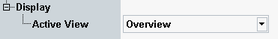

Display Configuration
The "Display" parameters select the diagram type to be displayed ("Active View").

Display settings
Use the hotkeys associated with the "Display" softkey to enable and scale the diagrams and select the trace types to be displayed.
All display settings are self-explanatory. No remote control is provided.